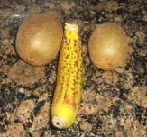
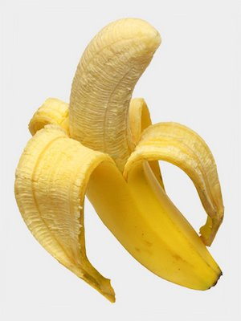
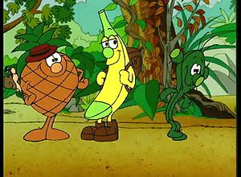

Fruta
 De: La Frikipedia, la enciclopedia extremadamente seria.
De: La Frikipedia, la enciclopedia extremadamente seria.
«Son cosas que no tienen madre y que no provienen del mar, ni del espacio.»
~ Mi cuñao
Son unas cosas probablemente inventadas por las madres para sustituir a los postres cuando nos portamos mal o para torturarnos haciendo potitos de sabores extraños. Tienen una alianza con la gente que se hace la guay: ¿Que quereis de postre?, hay flan, helado, arroz con leche y fruta. !!Yo quiero fruta¡¡, ese se hace el guay, quien cojones quiere fruta teniendo arroz con leche, nadie, vigilarle es un traidor.
FRUTAS VARIAS
 Pelicula X de bajo presupuesto.
- PLATANO O BANANA: oriundo de paises guachupinos y canarias, se utiliza principalmente en peliculas de X de bajo presupuesto. Amarillo, con piel e interior carnoso, principal alimento oral entre las feminas de Los Simpson.
 Despues de pelar, a la boca.
- PERAS: inventadas por Pamela Anderson y Carmen Alcaide, las hay en verde pero las mejores son de otro color, sus curvas, textura y sabor es lo mejor para levantar el animo. Extremadamente agradables al tacto. Extrañamente algunas veces pueden llegar a producir leche, lo cual no tiene sentido.
- MANZANAS: creadas por Dios como excusa para desterrarnos, tocar los cojones en los primeros años de tu vida, solo las veras en forma de mocos o papilla, divertida de vomitar, mala de tragar. Tienen piel y corazon pero no ojos ni bigote, asi que no le llameis papa. Tambien fuente de inspiracion para un tio vago llamado Isaac.
- NARANJAS: lo arreglan todo, curan catarros, McGiver fabrica dinamita con ellas, se utiliza como tinta secreta y su buena relacion peso-volumen la hace ideal para lanzar a la cabeza. No se sabe porque las naranjas de Espiña cabrean a los gabachos. Hace el milagro de combertir el calimocho en sangria. Tambien las hay mecanicas.
- MELONES: de la familia de las peras, estos no son tan agradables, son mucho mas grandes, estrias y piel de sapo rodean un interior fofo y caido. Suelen tener mas edad que las peras. Compañero del jamon en bodas y comuniones.
- MELOCOTON: las chicas desean tener su piel, su color, la forma la quieren en la cara y en el culo, esto a un hombre lo desvirtua. Fruto de la zona mediterranea es asiduo recurso de el Fary. La mandanga - Fary esto es un melocotonazo de miedo: Aqui
«... esta rosquilla tiene relleno morado... morado es fruta...»
~ Homer
FRUTAS MALVADAS, EL LADO OSCURO
- GRANADA: descubiertas en Granada ( Espiña ), causante de millones de muertes en varias guerras, piel dura y semillas a modo de metralla, cuidado al recogerlas del arbol, si se cae la anilla salir por patas.
- LIMON: hermano envidioso de la naranja, agria y sin sentido del humor, su funcion es saltar a los ojos cuando se parte en rodajas. Alcoholico incurable, siempre estara empapado en ron. Su mutacion o digievolucion es Blas de Barrio Sesamo.
- FRESA: completamente incomible si no va acompañada de nata, azucar o ginebra. Es la culpable de la creacion de los flases de fresa y de las lenguas del mismo color. Le dedicaron una cancion ( Sabor de amor ) que se utiliza en guantanamo para torturar prisioneros.
- KIWI: es como el Dar vader de las frutas, feo por fuera, verde por dentro y encima engorda como un filete. Ideal si tienes una amiga guapa y la quieres poner tocineta.
- CEREZAS: origen en las islas del mediterraneo, es muy conocida la productora de cerezas Pacha.S.A en Ibiza.
- COCO: duro por fuera y por dentro, sin corazon ni piedad, le da maltrato psicologico a Tom Hanks en Naugrago pues se veve el liquido que expulsa por un agujero.
FRUITIS, LA SERIE
 Gazpacho, Mochilo y Pincho con metadona.
Los fruitis ( los frutas ) en Espiña, Fruittis en Italiano, ¿Que es eso? en Estados Anidos, es una serie animada perpetrada en Madriz por tVe a finales de los años 80, que va de frutas, de la amistad y el roce, la cual gozó de gran éxito entre la poblacion carcelaria de la epoca. Está ambientada en una isla con un gran volcán donde hay una aldea en la que viven una comunidad de frutas, frutos secos, vegetales, legumbres y plantas, no es broma. Esta comunidad vive tranquila con sus dosis de metadona, hasta que comienza a acabarse lo que produce el volcán, es entonces cuando Mochilo, Gazpacho y Pincho emprenden camino en busca de un nuevo volcán donde pueda vivir la aldea. En su nueva aventura encontrarán a Kumba, una lumi de la isla, y se verán atacados por el pirata Alcachofo o por los cerdos punkys.
PERSONAJES
Kumba: es una niña mora a la que Mochilo, Pincho y Gazpacho salvan del ataque de dos jebis los cuales mueren. Kumba ayuda a los fruitis a encontrar un nuevo suministro de metadona en el bosque, tras lo cual se instala en su aldea como una más. En el capítulo 3 Kumba encuentra una nota en una botella de su hermano mayor Lucas y revela toda su historia: Kumba era la hija de dos exploradores jebis y haciendo memoria se comprende que los jebis que mataron eran sus padres. Su hermano se dio al karaoke y a los donus rellenos de ajo.
Mochilo: platano de canarias con una mochila, de la que saca todo lo necesario para salir de los problemas, cuerda, barcos, condones, tiendas de campaña. Conoce a Gazpacho en una sauna.
Gazpacho: piña andaluza, trabajador incansable mientras duerme o hace la siesta, como en la vida real. Tiene refranes para todo y siempre opina, osea que es un bocas.
Pincho: antes le pegaba al caballo, por eso su nombre, cactus inocente con voz de retrasado cerebral. Utiliza sus higos chumbos para repeler a los enemigos. Pincha mucho a Gazpacho.
Alcachofo:b alcachofa pirata malvada a la altura de Pier Nodoiuna, tiene su propia cancion y trata de matar a los frutas.
Monus: mono con bata blanca que hace esperimentos que explotan y con un ayudante llamado Gorilon.
GRANDES MOMENTOS DE LA FRUTA
- Utilizadas para hechar carreras en el autobus, ruedan, menos el platano que tiro Ralph.( Los Simpson )
- El Padrino es tiroteado mientras compraba naranjas.
- El Padrino utiliza una naraja a modo de dentadura para asustar a su nieto y la palma.
- Jenna Jamenson y un platano ........ lo...... utiliza.... mmmm......
- Ahora mismo en la teletienda estan triturando fruta con el nuevo minipimer mix 3000.
- Un coco es partido por Peter Pan en la pelicula Hook.
- Jonh Locke imita al padrino con una naranja en Perdidos.
- Baile Pomelo, impresionante documento que me niego a comentar.
- Banana brothers secta "fruteica".
Enlaces
Autor(es):
- Emedeme
- Frikiman
- Aque
- Roms
- Azulejos
- Vstyds
- Cibercrank
- Harry El del Pote
- Milongas
Frikipedia 2005-2016, Licencia
GFDL 1.2 - Extraído por FrikiLeaks